Visualisation des ondes
Quelques graphiques
Onde à 1 dimension (ex : corde)
La longueur d'onde est L = 1 m et la période est T = 5 s. L'amplitude est A = 0,5 m.
Représentation sur un graphe à 2-D : espace (x) et temps (t)
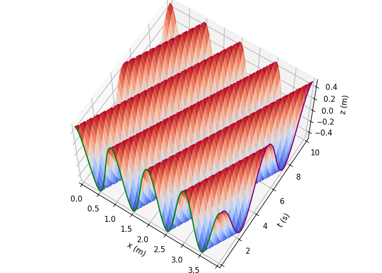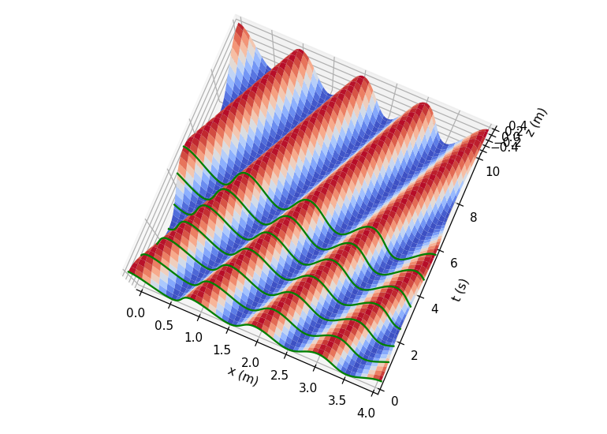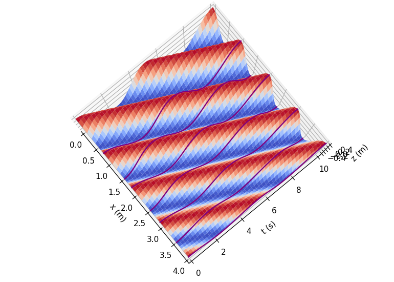
Propagation de l'onde au cours du temps
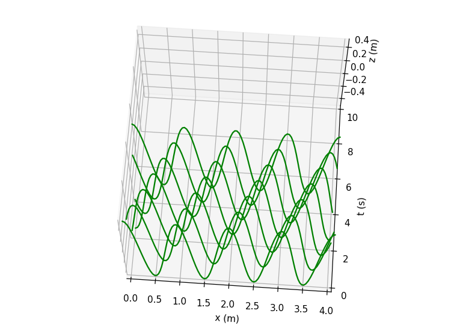
A t=0 et t=T, le milieu de propagation reprend le même aspect, mais à t=T/2 les ondes apparaissent en opposition de phase
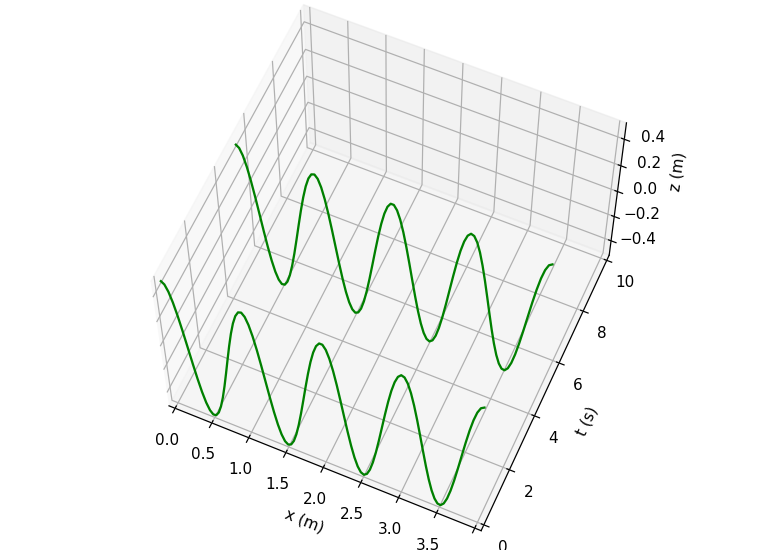
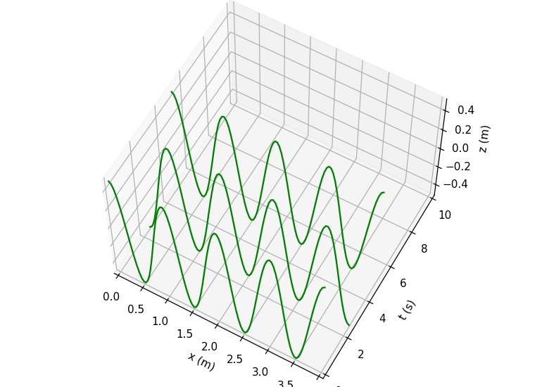
Des points séparés de n longueurs d'onde vibrent en phase, et séparés de (2n+1)/2 longueurs d'onde ils vibrent en oppostion de phase
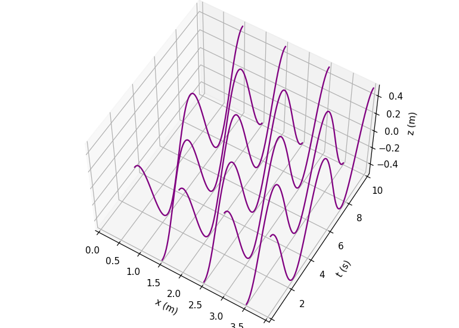
Visualisation de l'aspect spatial et temporel en même temps ; ou bien focus sur chaque aspect de façon individuelle
 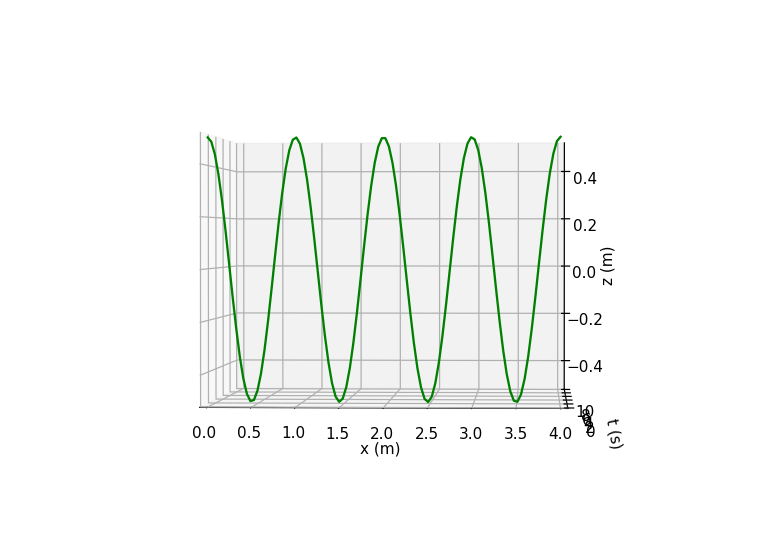
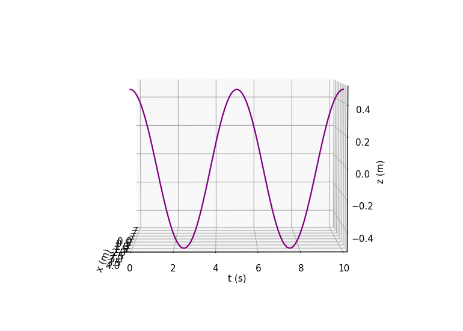
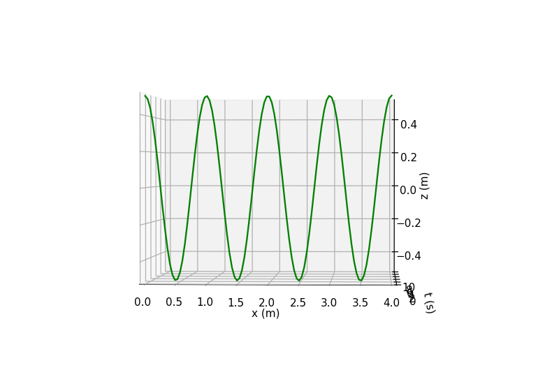
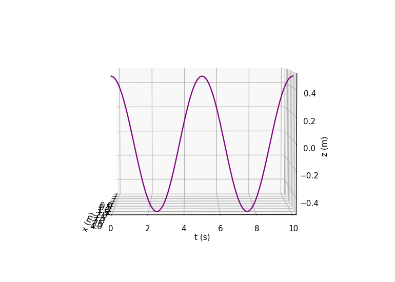
Quelques animations
L'amplitude vaut A = 1 m à x = 0 m, et on a ajouté une atténuation spatiale.
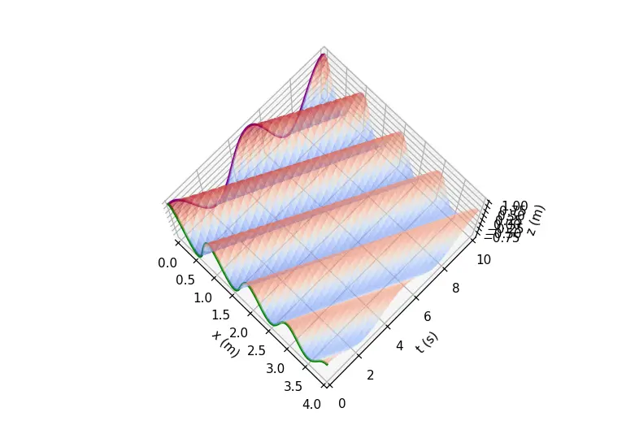
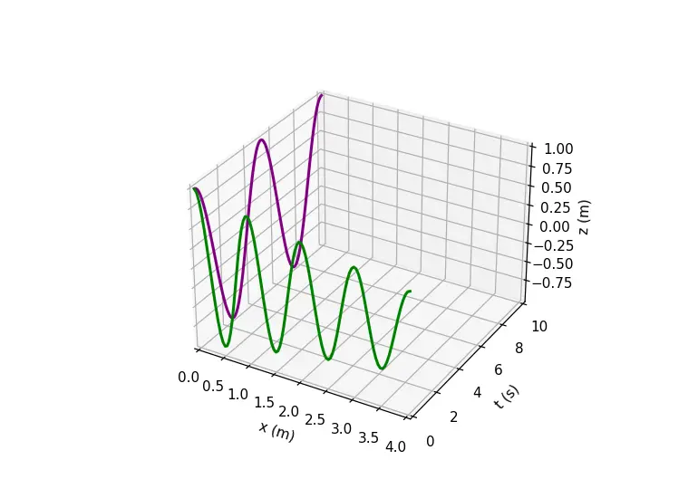
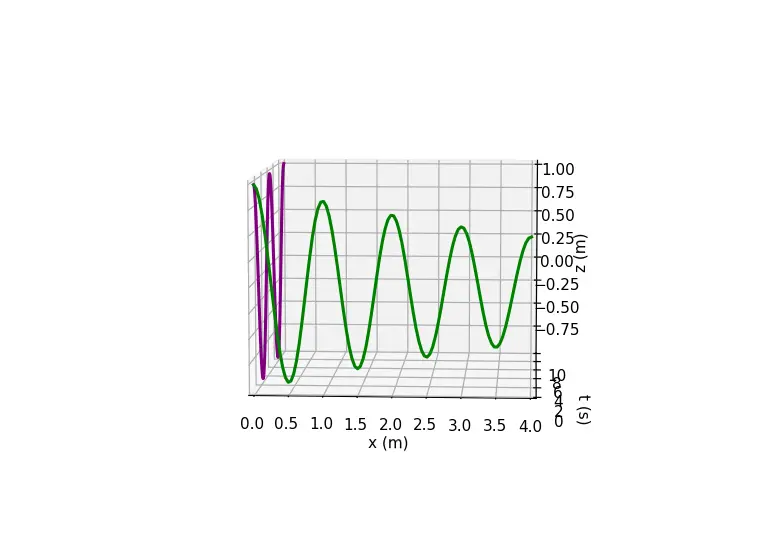
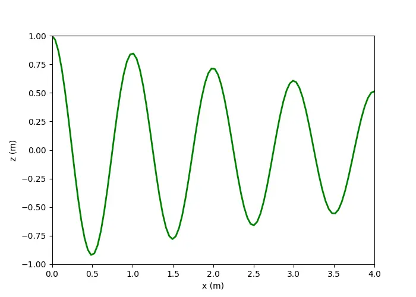